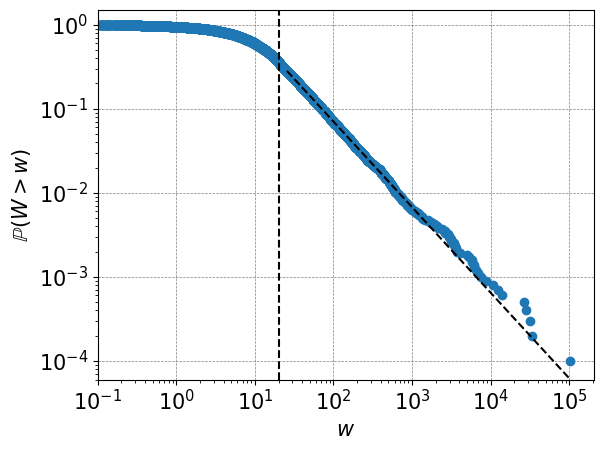

It takes a wise man to discover a wise man. - Diogenes

Research
- Linear regression for power law distribution fitting, S. Forbes, arXiv, 2023
(Link)
- A study of the probability distribution of the balls in bins process with power law feedback,
S. Forbes, arXiv, 2023 (Link)
- A study of UK household wealth through empirical analysis and a non-linear Kesten process, S. Forbes, S. Grosskinsky, PLOS ONE, 2022
(Link)
- Data driven analysis and modelling of the wealth distribution. PhD thesis, University of Warwick, 2023
(Link)